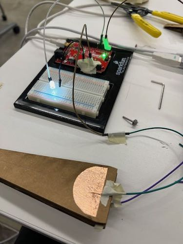

<div class="textcontainer">
<p class="margin"> </p>
<h3>Week 6: Electronic Inputs</h3>
<p class="margin"> </p>
<div class="flexrow">
<a id="btn" href="wk6.zip" download>Download my files from this week!
</a>
</div>
<p class="margin"> </p>
<h4>Assignment: Build a Capacitive Sensor</h4>
There's a bit of a story behind my assignment for this week. I had been in the
theater setting up lights for a musical, and I was
trying to bounce-focus the lights. This is a tricky process used when lights are
hung over, for example, stairs or pieces of scenery that prevent you from reaching
them with a ladder or genie lift. Instead of going up to the light and pointing it
in the right direction, the lights are flown in to ground level, pointed in our
best guess of where they should go, and flown out again. While I was doing this,
I thought it would be nice if I could accurately measure the tilt angle of the light
from the ground, because then I could set the light to match whatever angle I've
calculated from a scale drawing and hopefully get it pointed in the right direction
with fewer tries.
Because of this, I decided to make a capacitive rotary sensor to measure angles,
like a pair of calipers but for an angle. I started by building a quick prototype
out of cardboard and capacitive copper sheets. The idea was that at smaller angles,
the sheets would overlap more and the capacitance would increase.
<p class="margin"> </p>
<div class="flexrow">
</div>
<p class="caption">The first prototype I made was small and didn't work too well.</p>
That first prototype was pretty hastily-built, but it did seem to indicate that
the basic idea of the sensor would work, so I went ahead and drafted two longer
arms for a second prototype. The arms were cut on the laser cutter, with a rounded
base to mount the copper sheets on and a hole for me to attach the arms via a central
axle. I hooked up the sensor to my Arduino and set up a quick program to chart the
capacitance on the Serial graph. As a visual indicator of the sensor value, I also added an LED to the circuit
that would get brighter and dimmer according to the capacitance value.
<p class="margin"> </p>
<div class="flexrow">
</div>
<p class="caption">Left: the second prototype, featuring longer arms, wired up
to an Arduino. Right: a photo of the graph readout of the changing capacitance
values on my computer.</p>
<p class="margin"> </p>
<div class="flexrow">

<img src="./led_demo.gif" alt="a gif animation of the LED getting brighter and dimmer as the arms move">
</div>
<p class="caption">The version of the circuit with the added LED indicator.</p>
</div>